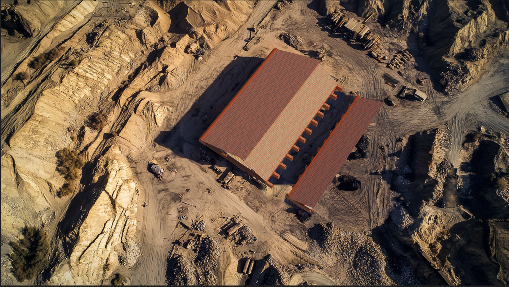
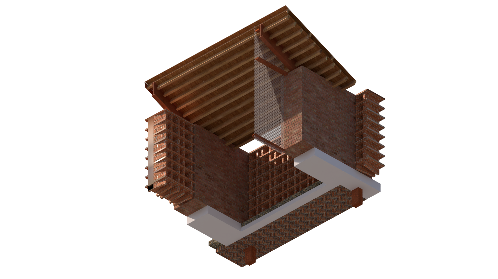
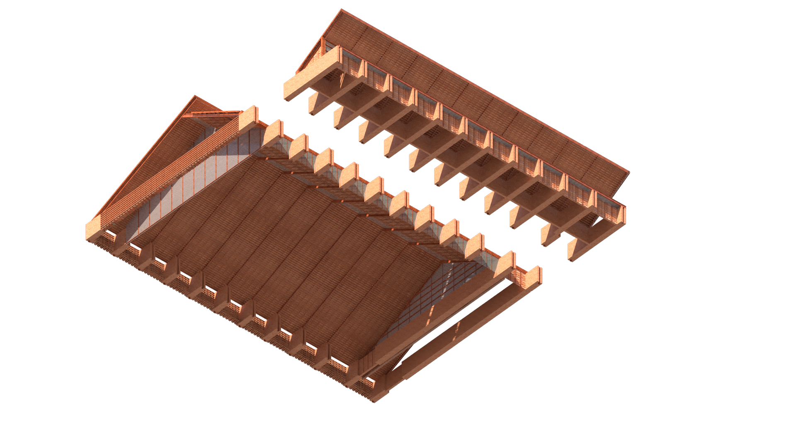
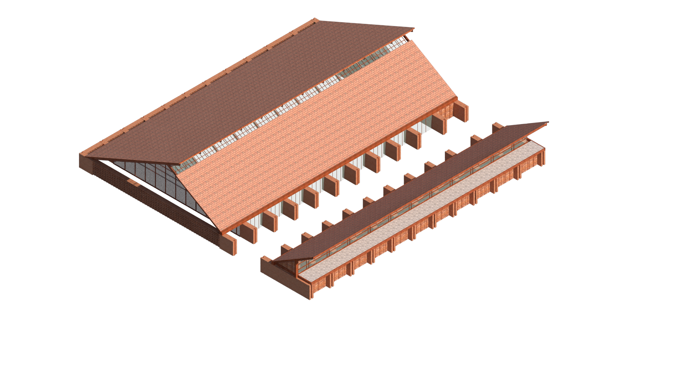
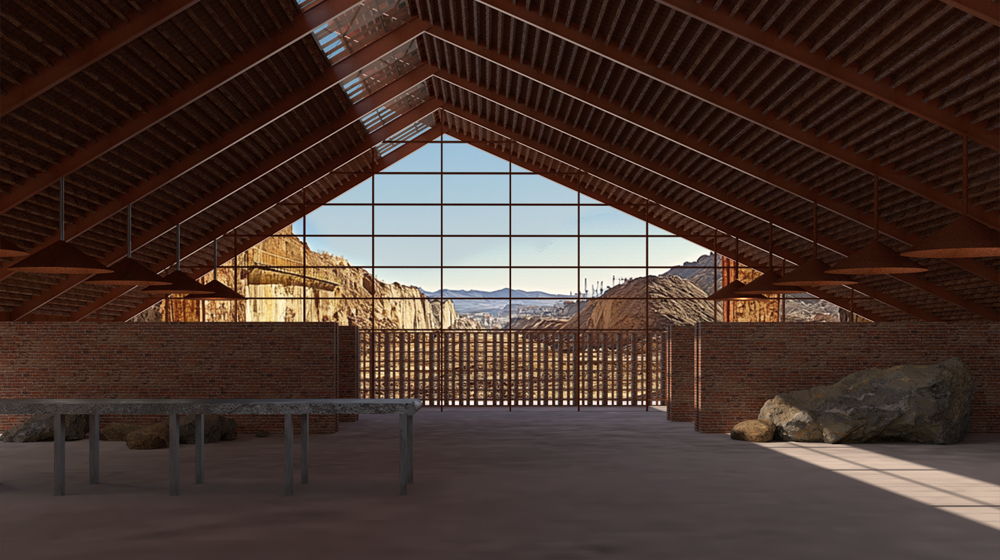
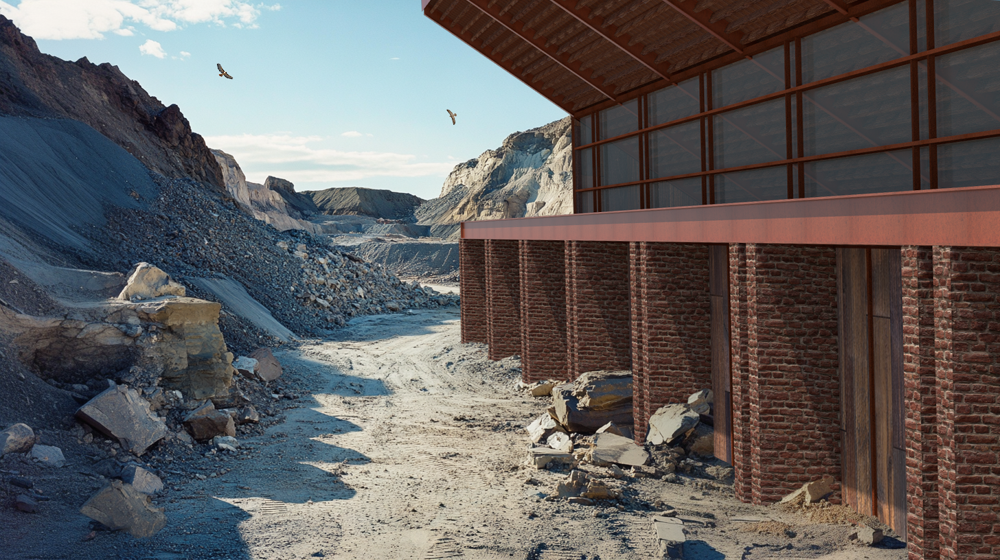
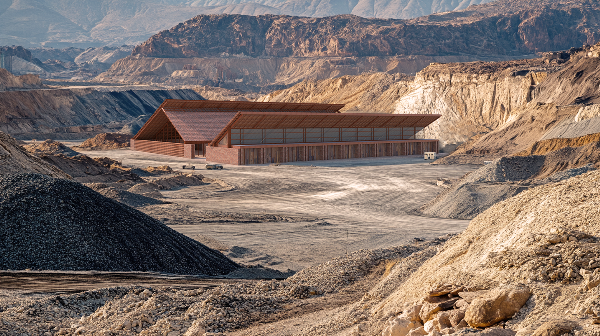
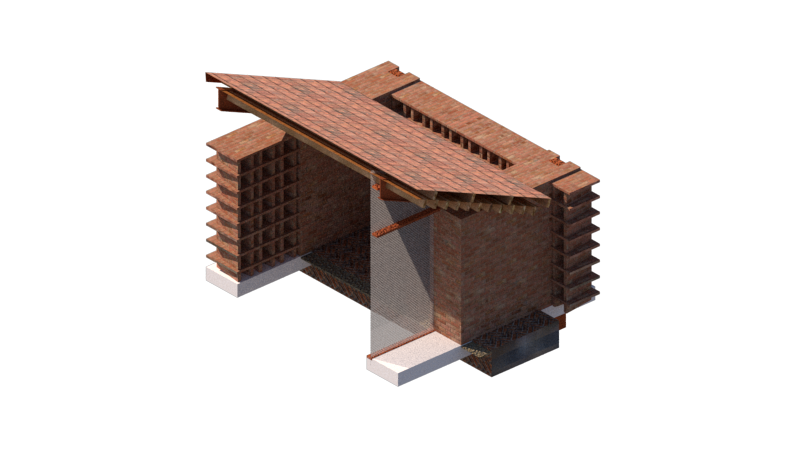

Casa Musica
Casa Musica sits within an active desert quarry, its long gabled roofs and sawtooth wings pitched to echo the surrounding excavated terrain. A brick base grounds the structure while a heavy timber roof structure spans overhead, its gable end fully glazed to frame the quarry and mountains beyond. Inside, the room is deliberately unfinished — raw stone brought in from the site sits alongside cast furniture, blurring the line between what was quarried and what was built. The result is a communal gathering space for music and performance that reads as much as an extension of the landscape as a building set within it.






